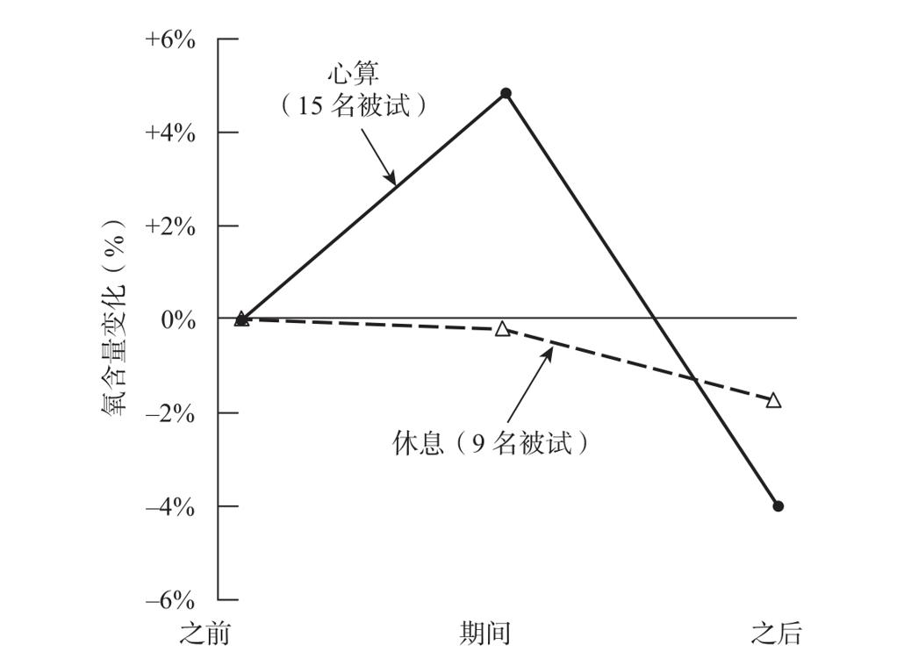

为了追溯脑成像技术的诞生，我们需要暂时把所有的现代技术抛至脑后，去追溯神经科学的久远历史。1931年，哈佛大学精神病理系的威廉·伦诺克斯（William Lennox）发表了一份报告《大脑血液循环：脑力工作的影响》（The cerebral circulation: the effect of mental work），他首次大胆地探索了算术活动对脑功能的影响3。伦诺克斯在该报告中提出了一个关键性的问题：认知加工对于脑部能量平衡的影响。心算是否涉及可测量的能量消耗，当大脑所进行的计算在强度上增加时，它是否消耗了更多的氧气？
伦诺克斯设计的实验方法很创新，也很骇人。在实验过程中，实验者需要从被试的颈内静脉血管抽取血样，以测量血液中氧和二氧化碳的含量。该研究中的24名被试是在波士顿城市医院进行治疗的癫痫患者。文章并没有报告他们是否了解自己所面临的风险，以及该研究的非治疗性目的。在20世纪30年代，伦理标准还非常低。
伦诺克斯的实验设计得非常巧妙。他对第一组的15名被试每人各进行了3次血液采样。第一份血样是在被试合眼休息半小时后采集的。其后，被试拿到写满算术问题的试卷，5分钟后，在被试努力解答问题时采集第二份血样。最后，在被试休息10到15分钟之后采集第三份血样。结果很明显：对3份血样中的氧含量进行检测后发现，心算时采集的血样氧含量显著增加（见图8-1）。伦诺克斯没有报告对这一结果的统计检验，但是我个人对原始数据进行统计检验后发现，样本间的这一巨大差异，只有大约2%的可能性可以被归结为随机因素。

早在1931年，伦诺克斯就指出大强度的心算能够引起颈内静脉血管血样的氧含量变化。
图8-1 心算引发血氧含量变化
资料来源：改编自Lennox的研究，1931。
然而这个实验设计存在一个有待完善的缺陷。借用伦诺克斯自己的话说：“当一个针头深深地扎进被试的脖子（原文如此）时，想要实现‘大脑空白’或者‘集中注意力于问题’这样的要求非常困难。每次抽血时被试恐惧和不安的程度可能并不完全相同。”
为了解决这一质疑，具有先见之明的伦诺克斯采取了预防措施：对另一组在整个测验过程中一直在休息的9个被试同样进行3次血样的抽取和测量，这些被试血样中的氧含量几乎保持稳定。因此在实验组中所观察到的血液氧含量的增加，一定是进行心算时需要花费巨大的努力而造成。这一发现打开了一个通往新世界的窗口，历史上第一次，人类客观地测量了智力活动所引起的能量消耗。
然而，从细节上看，该研究的结果存在明显的矛盾之处，伦诺克斯也注意到了这一点。由于血样来自颈内静脉血管，因此这些血液中的氧气已经经过大脑消耗。如果像预期的那样，心理活动增加了氧气的消耗，那么在脑部血流量不变的情况下，大脑进行智力活动时，静脉血液中的氧含量理应降低而非增加。为了解决这一矛盾，伦诺克斯展现了非凡的预见力，他早在1931年就提出了至今仍然有效的原则：“脑血管扩张引起的脑部血流速度的增加可以解释本研究的结果，这一因素带来的影响超过了耗氧量的增加。”
最近，有关功能性脑成像的研究证实了这个假设，它是现代功能性磁共振成像技术的核心。这个调节系统通过增加脑血流量来应对局部神经活动的增强，这确实能够提供给人脑更多可供消耗的氧。然而，人们对这种奇妙现象产生的原因仍然一知半解。伦诺克斯对这一现象的成功预见，向人们展现了一个研究者对自己工作的极度自信，尽管当时的研究是基于原始的、侵入性的技术。
接下来，我们以一项值得关注的后续研究来结束有关脑成像历史方面的讨论。1955年，美国宾夕法尼亚大学的路易斯·索科洛夫（Louis Sokoloff）及其同事展开的实验，没有能够再次得到伦诺克斯的结果（尽管他们所采用的方法只有非常细微的不同）4。对该研究的回顾让我想起了另外一些对于伦诺克斯研究的批评：伦诺克斯观察到的氧含量的增加可能与心算没有任何关系，这一结果可以被单纯地归结于认真审读试卷上的数学符号时所需的强烈认知活动，以及写下结果时所必需的运动。换句话说，伦诺克斯无法证明他真正地测量出了与视觉和肌肉活动截然不同的纯心理活动的生理基础。
然而对现代读者而言，这一研究最明显的缺陷在于，它完全忽略了脑定位这一问题。在计算过程中，脑部血流增加的情况是遍布全脑，还是只局限于一些特定的脑区？如果是后者，那么对脑部血流量的测量，是否能够成为一种把不同心理过程定位于皮层表面不同区域的工具？伦诺克斯甚至没有说明血样抽自左侧颈内静脉血管还是右侧颈内静脉血管，而这一信息对于心算过程的大脑半球定位具有重要价值。直到20世纪七八十年代，随着可靠的功能性脑成像技术的最终出现，空间定位才终于得到改善，人类大脑活动的真实情形也得以展现。